This is our first free surface example problem. We discuss the non-dimensionalisation of the free surface boundary conditions and their implementation in oomph-lib, and demonstrate the solution of a single layer relaxation problem.
Boundary conditions at a free surface
Free surfaces occur at the interface between two fluids. Such interfaces require two boundary conditions to be applied:
- a kinematic condition which relates the motion of the free surface to the fluid velocities at the surface, and
- a dynamic condition which is concerned with the force balance at the free surface.
The kinematic condition
The kinematic condition states that the fluid particles at the surface remain on the surface for all times. If the surface is parametrised by intrinsic coordinates  and 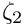, then the Eulerian position vector which describes the surface at a given time
and 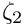, then the Eulerian position vector which describes the surface at a given time  can be written as 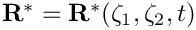. The kinematic condition is then given by
can be written as 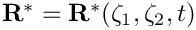. The kinematic condition is then given by
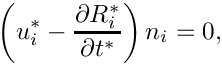
where 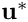 is the (dimensional) velocity of the fluid and  is the outer unit normal to the free surface. Using the same problem-specific reference quantities for the velocity,
is the outer unit normal to the free surface. Using the same problem-specific reference quantities for the velocity,  , length,
, length,  , and time,
, and time,  , that were used to non-dimensionalise the Navier–Stokes equations, we scale the dimensional quantities such that
, that were used to non-dimensionalise the Navier–Stokes equations, we scale the dimensional quantities such that
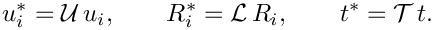
The non-dimensional form of the kinematic boundary condition is then given by
![\[ \left(u_i - St\, \frac{\partial R_i}{\partial t}\right) n_i = 0, \ \ \ \ \ \ \ \ \ \ (1) \]](form_11.png)
where the Strouhal number is
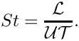
The dynamic condition

The dynamic boundary condition requires the stress to be continuous across a flat interface between two fluids. Referring to the sketch above, we define the lower fluid to be fluid 1 and the upper fluid to be fluid 2. The traction exerted by fluid 1 onto fluid 2, ![$ \mathbf{t}^{[1]*} $](form_13.png) , is equal and opposite to that exerted by fluid 2 onto fluid 1,
, is equal and opposite to that exerted by fluid 2 onto fluid 1, ![$ \mathbf{t}^{[2]*} $](form_14.png) , and therefore 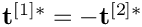. The traction in fluid
, and therefore 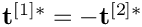. The traction in fluid  (
(  ) is given by
) is given by
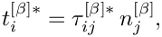
where 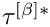 is the stress tensor in fluid and 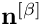 is the outer unit normal to fluid . Since 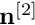 must equal ![$ -\mathbf{n}^{[1]} $](form_22.png) , we have
, we have
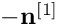
where we have arbitrarily chosen to use 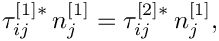 as the unit normal.
On curved surfaces, surface tension creates a pressure jump 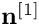 across the interface, where 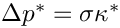 is the surface tension and 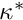 is equal to twice the mean curvature of the surface. Therefore the dynamic boundary condition is given by
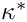
where 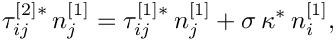 if the centre of curvature lies inside fluid
- Using the same problem-specific reference quantities as in the section above, the dimensional quantities are scaled such that
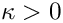
The non-dimensional form of the dynamic boundary condition is then given by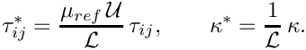
where the Capillary number is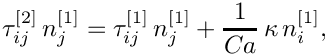
In certain cases, such as the example problem below, we wish to model the fluid above the interface as totally inviscid. In this case, the stress tensor in fluid 2 reduces to ![$ \tau_{ij}^{[2]} = - \delta_{ij} p_{ext} $](form_33.png) , where 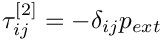 is the (non-dimensional) constant pressure above the free surface. The dynamic boundary condition therefore becomes
, where 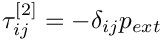 is the (non-dimensional) constant pressure above the free surface. The dynamic boundary condition therefore becomes
![\[ \tau_{ij} \, n_j = - \left( \frac{1}{Ca} \, \kappa + p_{ext} \right) n_i, \]](form_35.png)
where we have dropped the explicit references to fluid 1 since it is understood that the stress tensor and unit normals refer to those of the (one and only) viscous fluid in the problem.
We shall now discuss how the free surface boundary conditions are implemented in oomph-lib.
Implementation
The kinematic condition and the pseudo-solid node-update procedure
In addition to solving for the fluid velocity and pressure (as in all Navier–Stokes examples), we have additional degrees of freedom in our problem due to the fact that the position of the free surface 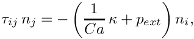 is unknown. The Navier–Stokes elements in oomph-lib are based on the Arbitrary Lagrangian Eulerian (ALE) form of the Navier-Stokes equations, and so can be used to solve problems in moving domains. This allows us to discretise our domain using a boundary fitted mesh, which will need to deform in response to the motion of the free surface. This is achieved by treating the interior of the mesh as a fictitious elastic solid, and solving a solid mechanics problem for the (unknown) nodal positions. This technique, which will subsequently be referred to as a ‘pseudo-solid node-update strategy’, employs wrapper elements to existing fluid and solid equation classes. The specific element used in this example is a PseudoSolidNodeUpdateElement<QCrouzeixRaviartElement<2>, QPVDElement<2,3> > element, which takes two template arguments. The first is the standard element type used to solve the fluid problem, and the second is the element type which solves the equations that are used to control the mesh deformation.
The deformation of the free surface boundary is imposed by introducing a field of Lagrange multipliers at the free surface, following the method outlined in Cairncross et al., `A finite element method for free surface flows of incompressible fluids in three dimensions. Part I. Boundary fitted mesh motion' (2000). These new unknowns are stored as nodal values, and so the vector of values at each node is resized accordingly. Since this introduces further degrees of freedom into the problem, we require an additional equation: the kinematic boundary condition (1).
We discretise this equation by attaching FaceElements to the boundaries of the "bulk" elements that are adjacent to the free surface. The specific FaceElement used in this example is an ElasticLineFluidInterfaceElement<ELEMENT>, which takes the bulk element type as a template argument. This allows the user of the driver code to easily change the bulk element type, since the appropriate FaceElement type is automatically used. These FaceElements are applied in the same way as all other surface elements (e.g. NavierStokesTractionElements, UnsteadyHeatFluxElements, etc.), and a general introduction can be found in another tutorial.
The dynamic condition
Within a finite element framework, the dynamic boundary condition is incorporated as contributions to each of the momentum equations at the free surface. We refer to Ruschak, `A method for incorporating free boundaries with surface tension in finite element fluid-flow simulators' (1980), for details on the formulation, which can also be found in our free surface theory document. Since both Taylor–Hood and Crouzeix–Raviart elements are implemented such that the normal stresses between elements are balanced, applying the dynamic boundary condition in cases in which we are solving the Navier–Stokes equations on both sides of the interface is as straightforward as adding the appropriate surface tension contributions to the relevant momentum equations at the interface. In cases such as the example below, where we have an inviscid fluid above the free surface, we need to add the appropriate external pressure contributions (if any) as well. Both of these contributions are automatically added to the appropriate momentum equations using the same FaceElements which are used to discretise the kinematic boundary condition (see above).
The Capillary number defaults to 1.0 and other values may be set using the function:
The Strouhal number defaults to 1.0 and other values may be set using the function:
The external pressure defaults to zero and other values may be set using the function:
where p_ext_data_pt is (a pointer to) the Data in which the value of the external pressure is stored. We note that the external pressure is represented by Data because it may be an unknown in certain problems, although it is simply a constant parameter in the example below. It can be accessed using the function:
The way in which the dynamic condition is incorporated within our finite element structure is discussed in more detail in the comments at the end of this tutorial.
The example problem
We will illustrate the solution of the unsteady two-dimensional Navier–Stokes equations using the example of a distorted free surface which is allowed to relax. The domain is periodic in the 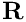 direction.
Solve 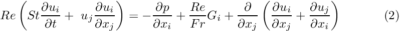 and 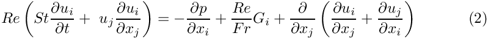 with gravity acting in the negative 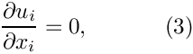 direction, in the unit square, where the free surface is located at , subject to the Dirichlet boundary conditions: 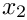 on the bottom, left and right boundaries and 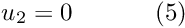 on the bottom boundary. The free surface is defined by , which is subject to the kinematic condition: 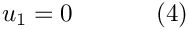 and the dynamic condition: 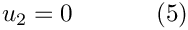 where the stress tensor is defined as: 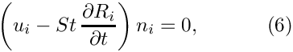 The initial deformation of the free surface is defined by:
where 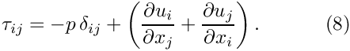 is a small parameter and 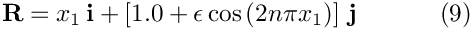 is an integer. |
![\[ \mathbf{R} = x_1 \, \mathbf{i} + \left[ 1.0 + \epsilon\cos\left( 2 n \pi x_1 \right)\right] \, \mathbf{j} \ \ \ \ \ \ \ \ \ \ (9) \]](form_46.png)
Results
The figure below shows a contour plot of the pressure distribution with superimposed streamlines, taken from an animation of the flow field, for the parameters 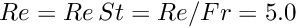 and 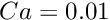.

At time 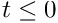 the free surface is fixed in its deformed shape, but as the simulation begins the restoring forces of surface tension and gravitational acceleration act to revert it to its undeformed flat state. The surface oscillates up and down, but the motion is damped as the energy in the system is dissipated through viscous forces. Eventually the interface settles down to its equilibrium position. This viscous damping effect can be seen in the following time-trace of the height of the fluid layer at the edge of the domain.

Validation
The free surface boundary conditions for the Cartesian Navier–Stokes equations have been validated against an analytical test case, and we present the results in the figure below. For sufficiently small amplitudes, 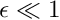, we can linearise the governing equations by proposing that we can write the fluid velocities and pressure, 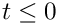, 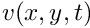 and 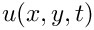, as well as the ‘height’ of the interface, 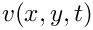, in the form 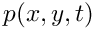, where the barred quantities correspond to the ‘base’ state, chosen here to be the trivial solution 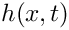. Once the linearised forms of the governing equations and boundary conditions have been determined we propose a separable solution of the form
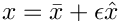
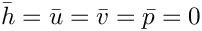
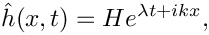
and
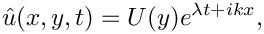
Substituting the above ansatz into the governing equations results in a system of coupled ordinary differential equations for 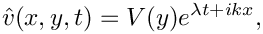, 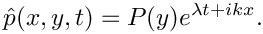 and which we solve to find their general solutions up to a set of unknown constants , , and  . By substituting these general forms into the set of (linearised and separated) boundary conditions we obtain a linear system of five equations in the five unknowns , , , and
. By substituting these general forms into the set of (linearised and separated) boundary conditions we obtain a linear system of five equations in the five unknowns , , , and  , from which we can assemble a homogeneous linear system of the form
, from which we can assemble a homogeneous linear system of the form
where is a  matrix whose entries are the coefficients of the unknowns in our five conditions. This system only has a non-trivial solution if , and solving this equation gives us as a function of . This is a dispersion relation and describes how wave propagation varies as a function of its wavenumber. More specifically, the real part of is the growth rate of the wave and the imaginary part is its frequency. This analytical result can now be compared to numerical results computed for given values of the wavenumber . We choose an initial deflection amplitude of and determine the growth rate and frequency of the oscillation from a time-trace of the left-hand edge of the interface.
matrix whose entries are the coefficients of the unknowns in our five conditions. This system only has a non-trivial solution if , and solving this equation gives us as a function of . This is a dispersion relation and describes how wave propagation varies as a function of its wavenumber. More specifically, the real part of is the growth rate of the wave and the imaginary part is its frequency. This analytical result can now be compared to numerical results computed for given values of the wavenumber . We choose an initial deflection amplitude of and determine the growth rate and frequency of the oscillation from a time-trace of the left-hand edge of the interface.

Global parameters and functions
As usual, we use a namespace to define the dimensionless parameters  , , and
, , and  , and we create a vector
, and we create a vector  which will define the direction in which gravity acts. We will need to pass the Strouhal number to the interface elements, but the product of the Strouhal number and the Reynolds number to the bulk elements. To avoid potentially inconsistent parameters, we compute rather than defining it explicitly. Because the mesh is to be updated using a pseudo-solid node-update strategy, we also require the Poisson ratio for the generalised Hookean constitutive law.
which will define the direction in which gravity acts. We will need to pass the Strouhal number to the interface elements, but the product of the Strouhal number and the Reynolds number to the bulk elements. To avoid potentially inconsistent parameters, we compute rather than defining it explicitly. Because the mesh is to be updated using a pseudo-solid node-update strategy, we also require the Poisson ratio for the generalised Hookean constitutive law.
The driver code
We start by computing the product of the Reynolds and Strouhal numbers before specifying the (non-dimensional) length of time for which we want the simulation to run and the size of the timestep. Because all driver codes are run as part of oomph-lib's self-testing routines we allow the user to pass a command line argument to the executable which sets the maximum time to some lower value.
Next we specify the dimensions of the mesh and the number of elements in the and directions. To remain consistent with the example code we shall from now on refer to as  and as
and as  .
.
At this point we define the direction in which gravity acts: vertically downwards.
Finally, we build the problem using the ‘pseudo-solid’ version of QCrouzeixRaviartElements and the BDF<2> timestepper, before calling unsteady_run(...). This function solves the system at each timestep using the Problem::unsteady_newton_solve(...) function before documenting the result.
The problem class
Since we are solving the unsteady Navier–Stokes equations, the Problem class is very similar to that used in the Rayleigh channel example. We specify the type of the element and the type of the timestepper (assumed to be a member of the BDF family) as template parameters, before passing the number of elements and domain length in both coordinate directions to the problem constructor. We define an empty destructor, functions to set the initial and boundary conditions and a post-processing function doc_solution(...), which will be used by the timestepping function unsteady_run(...).
The nodal positions are unknowns in the problem and hence are updated automatically, so there is no need to update the mesh before performing a Newton solve. However, since the main use of the methodology demonstrated here is in free-boundary problems where the solution of the solid problem merely serves to update the nodal positions in response to the motion of the free surface, we reset the nodes' Lagrangian coordinates to their Eulerian positions before every solve, by calling SolidMesh::set_lagrangian_nodal_coordinates(). This makes the deformed configuration stress-free and tends to stabilise the computation, allowing larger domain deformations to be computed.
The problem class stores pointers to the specific bulk mesh and the surface mesh, which will contain the interface elements, as well as a pointer to a constitutive law for the pseudo-solid mesh. The width of the domain is also stored since it is used by the function deform_free_surface(...) when setting up the initial mesh deformation. Finally we store an output stream in which we record the height of the interface at the domain edge.
The problem constructor
The constructor starts by copying the width of the domain into the private member data of the problem class, before building the timestepper.
Next we build the bulk mesh. The mesh we are using is the ElasticRectangularQuadMesh<ELEMENT>, which takes the bulk element as a template argument. The boolean argument in the mesh constructor, which is set to ‘true’ here, indicates whether or not the domain is to be periodic in . The surface mesh is also built, although it is empty at this point.
Having created the bulk elements, we now create the interface elements. We first build an empty mesh in which to store them, before looping over the bulk elements adjacent to the free surface and ‘attaching’ interface elements to their upper faces. These newly-created elements are then stored in the surface mesh.
Now that the interface elements have been created, we combine the bulk and surface meshes into a single mesh.
On the solid bottom boundary ( ) we pin both velocity components so that there is no penetration of the wall by the fluid or flow along it. On the left and right symmetry boundaries ( and  ) we pin the component of the velocity but leave the component unconstrained. We do not apply any velocity boundary conditions to the free surface (the top boundary). We pin the vertical displacement of the nodes on the bottom boundary (since these must remain stationary) and pin the horizontal displacement of all nodes in the mesh.
) we pin the component of the velocity but leave the component unconstrained. We do not apply any velocity boundary conditions to the free surface (the top boundary). We pin the vertical displacement of the nodes on the bottom boundary (since these must remain stationary) and pin the horizontal displacement of all nodes in the mesh.
Next we create a generalised Hookean constitutive equation for the pseudo-solid mesh. This constitutive equation is discussed in another tutorial.
We loop over the bulk elements and pass them pointers to the Reynolds and Womersley numbers, and  , the product of the Reynolds number and the inverse of the Froude number, , the direction of gravity, , and the constitutive law. In addition we pass a pointer to the global time object, created when we called
, the product of the Reynolds number and the inverse of the Froude number, , the direction of gravity, , and the constitutive law. In addition we pass a pointer to the global time object, created when we called Problem::add_time_stepper_pt(...) above.
Next we create a pointer to a Data value for the external pressure , before pinning it and assigning an arbitrary value.
We then loop over the interface elements and pass them a pointer to this external pressure value as well as pointers to the Strouhal and Capillary numbers.
Finally, we apply the problem's boundary conditions (discussed later on) before setting up the equation numbering scheme using the function Problem::assign_eqn_numbers().
Initial conditions
This function sets the initial conditions for the problem. We loop over all nodes in the mesh and set both velocity components to zero. No initial conditions are required for the pressure. We then call the function Problem::assign_initial_values_impulsive() which copies the current values at each of the nodes, as well as the current nodal positions, into the required number of history values for the timestepper in question. This corresponds to an impulsive start, as for all time none of the fluid is moving and the shape of the interface is constant.
Boundary conditions
This function sets the boundary conditions for the problem. Since the Dirichlet conditions are homogeneous this function is not strictly necessary as all values are initialised to zero by default.
Prescribing the initial free surface position
At the beginning of the simulation the free surface is deformed by a prescribed function (9). To do this we define a function, deform_free_surface(...), which cycles through the bulk mesh's Nodes and modifies their positions accordingly, such that the nodes on the free surface follow the prescribed interface shape (9) and the bulk nodes retain their fractional position between the lower and the (now deformed) upper boundary.
Post-processing
As expected, this member function documents the computed solution. We first output the value of the current time to the screen, before recording the continuous time and the height of the free surface at the domain boundary in the trace file. We note that as the domain is periodic the height of the free surface must be the same at both the left and right boundaries.
We then output the computed solution.
Finally, we output the shape of the interface.
The timestepping loop
The function unsteady_run(...) is used to perform the timestepping procedure. We start by deforming the free surface in the manner specified by equation (9).
We then create a DocInfo object to store the output directory and the label for the output files.
Next we open and initialise the trace file.
Before using any of oomph-lib's timestepping functions, the timestep must be passed to the problem's timestepping routines by calling the function Problem::initialise_dt(...) which sets the weights for all timesteppers in the problem. Next we assign the initial conditions by calling Problem::set_initial_condition(), which was discussed above.
We determine the number of timesteps to be performed and document the initial conditions, and then perform the actual timestepping loop. For each timestep the function unsteady_newton_solve(dt) is called and the solution documented.
Comments
The application of the dynamic boundary condition within the FEM
As discussed in an earlier tutorial, the finite element solution of the Navier–Stokes equations is based on their weak form, which is obtained by weighting the stress-divergence form of the momentum equations with the global test functions , and integrating by parts to obtain the discrete residuals
Weighting the dynamic condition (7) by the same global test functions and integrating over the domain boundary gives
In a two-dimensional problem, such as the one considered in this tutorial, the domain boundary reduces to a one-dimensional curve, . A further integration by parts of (11) therefore gives
where , is the -th component of a unit vector tangent to and pointing in the direction of increasing  , and and are the two endpoints of .
, and and are the two endpoints of .
In the problem considered in this tutorial, the domain boundary can be written as , where represents the portion of the domain boundary corresponding to a rigid wall and represents the portion corresponding to the free surface. The velocity along is prescribed by Dirichlet boundary conditions, and we recall that the global test functions vanish in this case. On non-Dirichlet boundaries we must either specify the external pressure , or deliberately neglect this term to obtain the ‘natural’ condition .
The contact line
In this two-dimensional case, the contact ‘line’ actually reduces to two contact points, and , which are located at either side of the portion of the domain boundary corresponding to the free surface . The two point contributions are added by specifying the the tangent to the surface at each of the contact points, which is equivalent to prescribing the contact angle that the free surface makes with the neighbouring domain boundary. We note that in the problem considered here we do not explicitly apply any boundary conditions at either end of the free surface. Neglecting these contributions corresponds to the ‘natural’ condition of prescribing a  contact angle, which happens to be the appropriate condition in this case. Contact angles of arbitrary size can be enforced using
contact angle, which happens to be the appropriate condition in this case. Contact angles of arbitrary size can be enforced using FluidInterfaceBoundingElements, which are discussed in a later tutorial.
Specifying the contact angle is not the only condition that can be applied at the edges of an interface. The alternative boundary condition is to pin the contact line so that its position is fixed for all time. Since this is a Dirichlet condition it causes the integral over the contact line to vanish.
Source files for this tutorial
- The source files for this tutorial are located in the directory:
demo_drivers/navier_stokes/single_layer_free_surface/ - The driver code is:
demo_drivers/navier_stokes/single_layer_free_surface/elastic_single_layer.cc
PDF file
A pdf version of this document is available.